"... equations for calculating the rate of heat transfer from airfoils in icing conditions were verified"
"The Calculation of the Heat Required for Wing Thermal Ice Prevention in Specified Icing Conditions" 1

Summary
Natural icing flight tests with an instrumented test airfoil are compared to 2D thermodynamic calculations.
Key points
- Thermodynamic equations for a heated surface with water impingement are detailed.
- Test flights in natural icing conditions measured surface temperature for a heated surface.
- Runback water characteristics were noted.
- Heat transfer coefficients in icing were be inferred from measurements and calculations.
- "the design of heated wings on a fundamental, wet-air basis now can be undertaken with reasonable certainty."
Abstract
As a result of a fundamental investigation of the meteorological conditions conducive to the formation of ice on aircraft and a study of the process of airfoil thermal ice prevention, previously derived equations for calculating the rate of heat transfer from airfoils in icing conditions were verified. Knowledge of the manner in which water is deposited on and evaporated from the surface of a heated airfoil was expanded sufficiently to allow reasonably accurate calculations of airfoil heat requirements. The research consisted of flight tests in natural-icing conditions with two 8-foot-chord, heated airfoils of different sections. Measurements of the meteorological variables conducive to ice formation were made simultaneously with the procurement of airfoil thermal data.
It was concluded that the extent of knowledge on the meteorology of icing, the impingement of water drops on airfoil surfaces, and the processes of heat transfer and evaporation from a wetted airfoil surface has been increased to a point where the design of heated wings on a fundamental, wet-air basis now can be undertaken with reasonable certainty.
Discussion
This is one of the longest reviews, as NACA-TN-1472 is long (108 pages) and is densely packed with information. Large portions of NACA-TN-1472 will be reproduced here.
The symbols are a little different from those previously in the Thermodynamics thread.
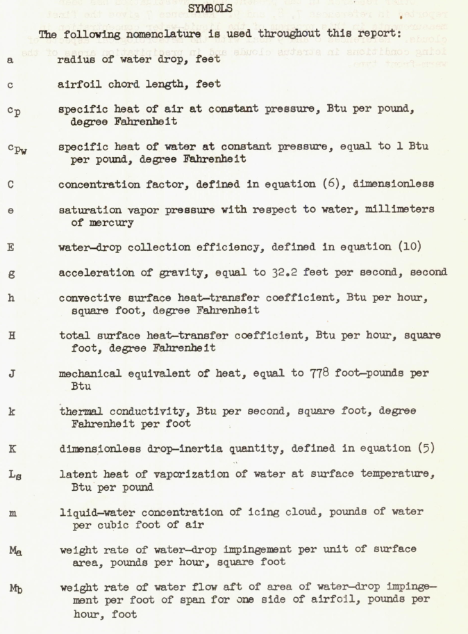 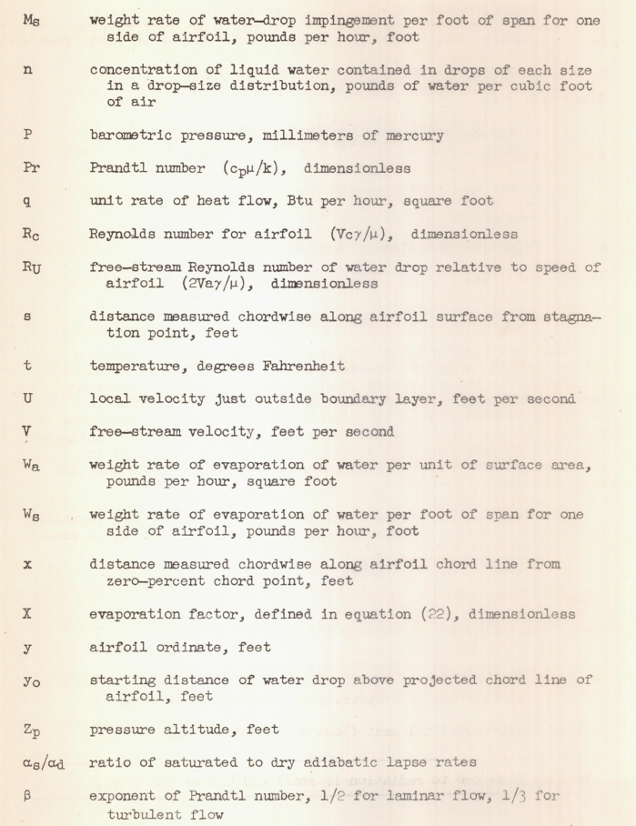 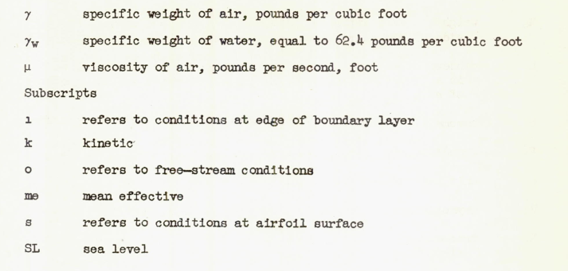
Large portions of NACA-TN-1472 will be reproduced herein.
A thermodynamic heat balance is outlined:
ANALYSIS During flight in icing conditions a heated wing is cooled by convective heat transfer, by evaporation of the water on the surface, and, in the region of droplet interception, by the water striking the wing. The rate at which beat must be supplied in order to maintain the wing surface at a specified temperature is, therefore, a function of the rates of convection, evaporation, and water impingement. Equations for expressing this heat requirement are presented in references 5 and 6. These equations, with slight modification, are used throughout this report.
Expressed as an equation, the unit heat loss q from a partially or completely wetted surface exposed to icing conditions may be stated:
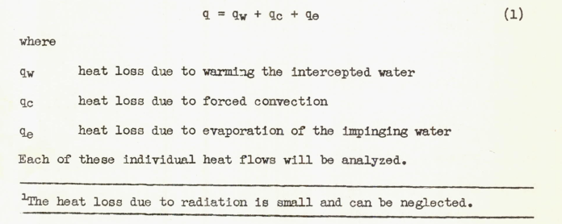
Heat transfer due to impinging water
The heat transfer due to impinging water is detailed and then simplified (equation 4):
Heat Loss Due to Warming the Intercepted Water In the region where water droplets strike the wing, the heat required per unit area to heat the water to surface temperature is 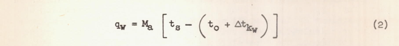
Note that Cpw is implicitly included (the value in the units used is 1 BTU/lbm-F, so it was omitted).
In other unit systems, equation (2) should be:
qw = Ma * Cpw * (ts - (to + Δtkw))
The term Δtkw is the kinetic temperature rise of the water caused by stoppage of the droplets as they strike the wing. The value of Δtkw is given by 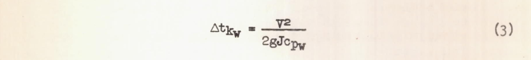
where V is the free-stream velocity in feet per second. The value of Δtkw is less than 2 Fahrenheit for airplane speeds up to 200 miles an hour and, for the calculations presented in this report, the term has been neglected. Equation (2) thus becomes:
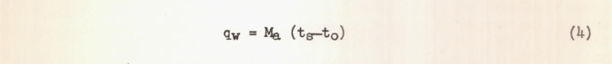
"Runback" is defined:
The weight rate of water impingement on the wing, the area of and the distribution of the water over that area are important factors in the heat-transfer analysis . In addition to the effect of the amount of water intercepted on the value of qw in equation (4), the evaluation of Ma provides an indication of the quantity of water which must be maintained in a liquid state until it either evaporates or runs off the trailing edge if the formation of ice aft of the area of impingement, normally termed "runback," is to be avoided. The area of impingement influences the extent of heated region to be provided at the leading edge, while knowledge of the distribution of water impingement is required in the calculation of the heating requirement in areas where water is striking.
Rate of water impingement
Water-drop impingement characteristics were obtained:
Preliminary calculations based on references 16 3 and 17 4 indicated that, for large values of drop size and airspeed, the assumption of the equivalent cylinder would not hold for airfoils. Therefore, more extensive calculations were undertaken to determine the drop trajectories for one of the test airfoils of this research, an NACA 0012 airfoil at 0 angle of attack. In these calculations, presented in detail in reference 15 2, a Joukowski airfoil (the contour of which closely approximates that of the NACA 0012) was used to supply the stream lines since the Joukowski stream lines and velocity field can be computed with relative ease. The basic equations presented in reference 16 were used with modifications for deviation from Stokes' law as given in reference 17.
The rate of water impingement can now be evaluated:
The rate of water impingement at a specified point on an airfoil is a function of the area of impingement, the velocity of flight, the liquid-water concentration of the air stream, and the distribution of the intercepted vater over the surface. This latter factor, called the concentration factor C is represented by the ratio of Yo to s, or: 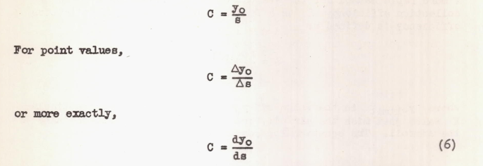
Using values of C obtained from figure 2, the weight of water impingement at any point on the surface can be calculated from equation (7).
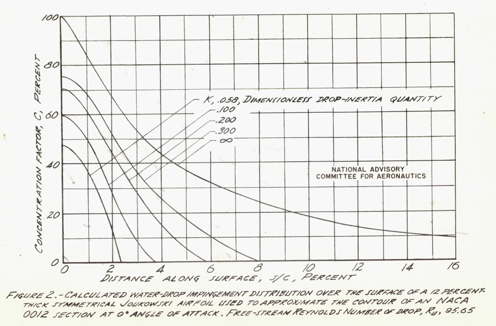
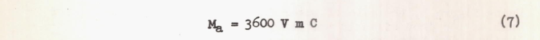
The effect of drop size distributions can be included:
In the case of a cloud, where the water drops are not of uniform size, but instead follow a pattern of size distribution, the rate of impingement can be computed if the distribution is known or assumed. The rate of water impingement at any point is the sum of all the rates of impingement of the volume of water contained in each drop s1ze. Equation (8) then becomes: 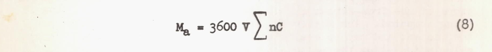 where n is the concentration of liquid water contained in drops of a particular size and C is the concentration factor for the K value corresponding to that drop size.
The total water catch can be calculated:
In order to establish the possibility of runback forming aft of the heated area of a wing, it is necessary to know the total quantity of water intercepted per unit of wing span. This rate of impingement, denoted as Me in pounds per hour, foot span, is given by 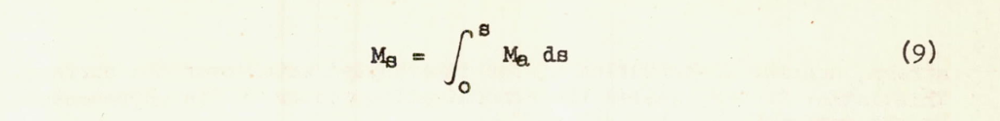 A more rapid method for the evaluation of Me utilizes a curve of collection efficiency E as a function of K (fig. 3). Collection efficiency is defined as: 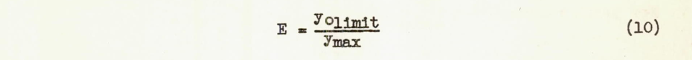 where Yolimit is the value of Yo for which drops of a particular K value just miss the airfoil, and Ymax is the maximum ordinate of the airfoil. The equation for computing Me, then, is 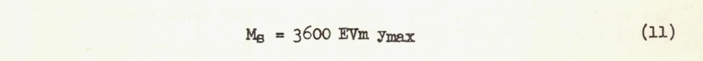 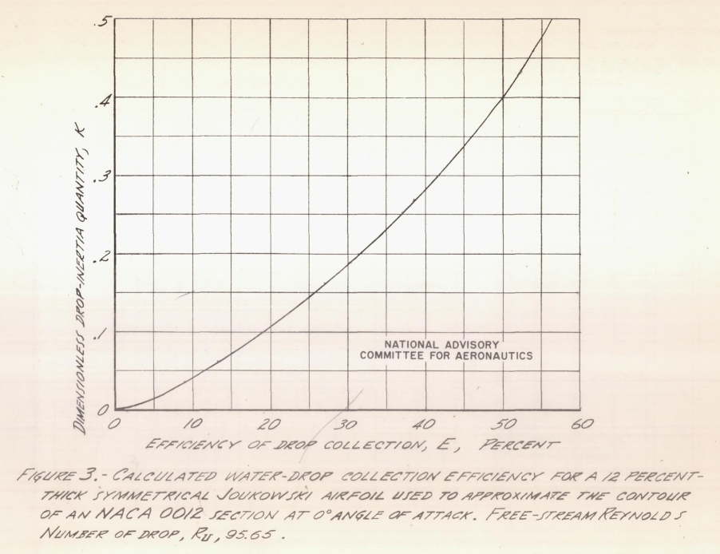
Heat Loss Due to Forced Convection
The unit heat flow from the surface of a body in an air stream resulting from convective heat transfer can be expressed: 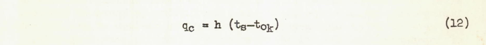
where ts is the surface temperature and tok is the kinetic temperature of the free-stream air at the point for which the heat flow is being computed. The factor h is the convective heat-transfer coefficient and may be evaluated by measurements in clear air or by calculation using the methods presented in references 18 and 19. Evaluation of the term tok will now be discussed.
... 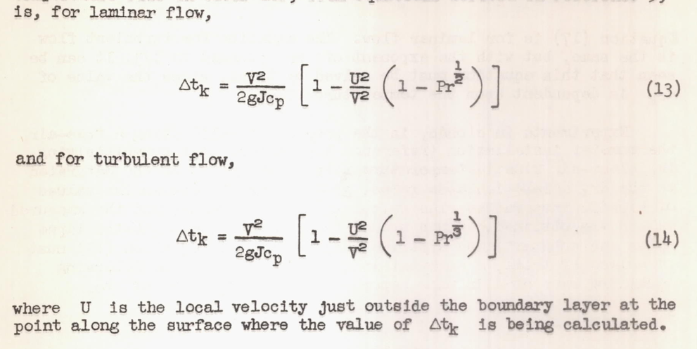
Here we see the water drop equilibrium assumption, re-stated as "evaporation of water from the surface". Note that this portion of evaporation is evaluated at the kinetic temperature, not at the heated surface temperature.
In clouds, the kinetic temperature rise is reduced, due to evaporation of water from the surface. Assuming the surface is completely wetted with water, the value of the temperature rise for laminar flow becomes 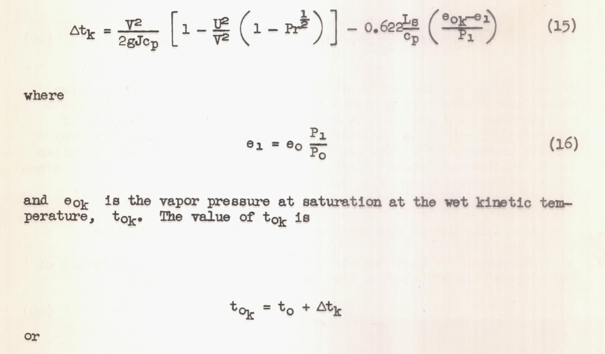 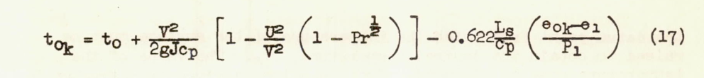
An alternative way of calculating "tok" was selected:
Experiments in clouds, in the process of calibrating a free-air thermometer installation (reference 13), showed that by multiplying the clear-air kinetic-temperature rise by the ratio of the saturated to the dry adiabatic lapse rates, good agreement between the values of kinetic temperature rise calculated in this manner and the measured values was obtained. Since use of the ratio of the adiabatic lapse rates was substantiated experimentally, and since equation (17) must be solved by trial, a somewhat laborious procedure, the following equations were used in this report to calculate values of tok: 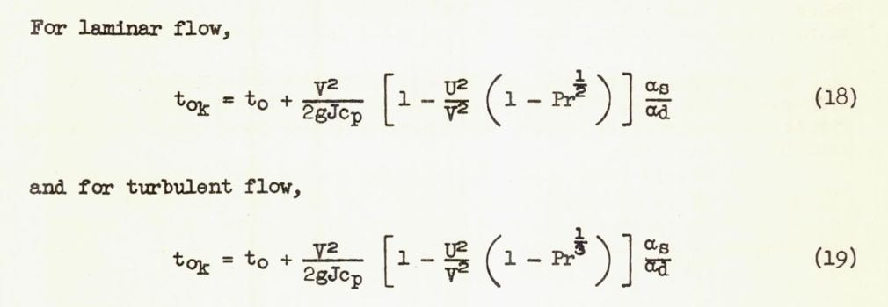 Values of αs/αd, the ratio of the wet- to the dry-adiabatic lapse rates, are obtained from figure 4. The use of the lapse-rate ratio in equations (18) and (19) is semi-empirical. The limitations of this simplification in the calculation of kinetic-temperature rise of airfoil surfaces in clouds are not known. Below speeds of 200 miles per hour, however, these equations can be used with small error, since the kinetic-temperature rise is low. 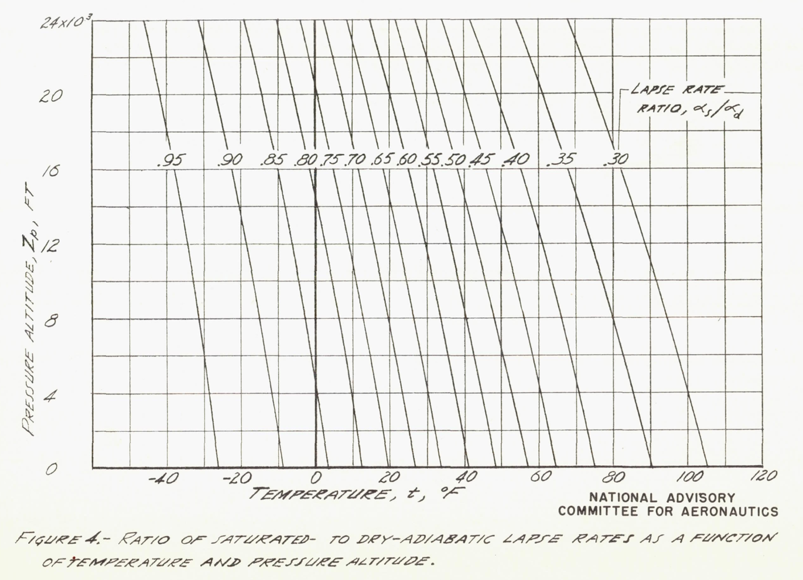
Heat Loss Due to Evaporation of the Water on the Surface
The amount of heat removed from a wetted surface as a result of the evaporation of water on that surface can be expressed:

A lumped and linearized value X for convection and evaporation is developed:
From reference 6 the relation between Qe and the convective heat-transfer coefficient h can be expressed for a completely wetted surface as: 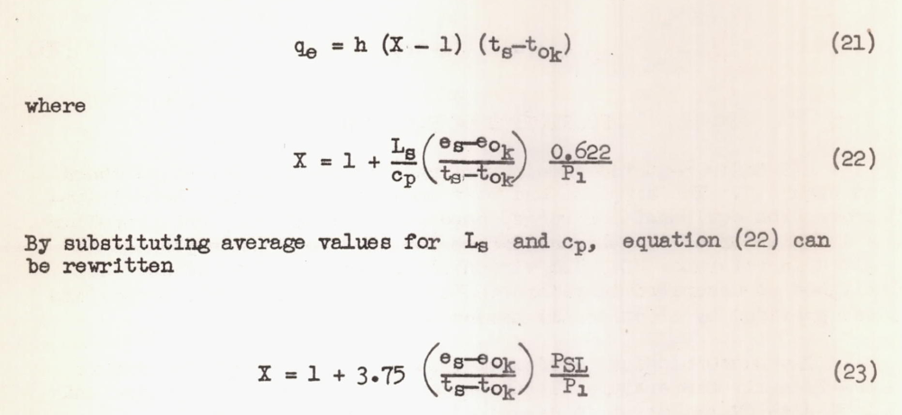 The values chosen for Ls and cp are 11OO Btu per pound and 0.24 Btu per pound, Fahrenheit, respectively. The factor PSL/P1 is the ratio of the standard sea-level pressure to the local static pressure.
It should be noted that the evaporation factor X applies only when the surface is completely wetted. If only partial wetness prevails, the value of X must be modified according to the degree of wetness
Total heat loss from a wetted surface
Summarizing the heat losses due to water impingement, convection, and evaporation, equation (1) can be written: 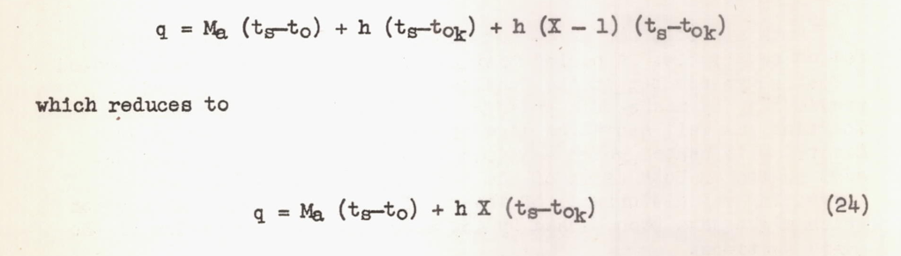
Aft of the region of water impingement, Ma = 0 and equation (24) becomes 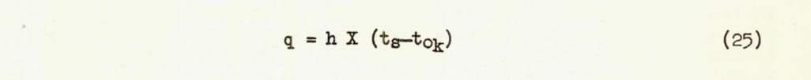
Flight tests
Detailed test articles were constructed.
Two electrically heated test airfoils were used to obtain fundamental data on the process of wing thermal ice prevention. Each airfoil was mounted vertically on top of the fuselage of the C-46 airplane, as shown in figure 5. The test airfoil installed during the winter of 1945-46 had an NACA 0012 section.
Measurements of the temperature of the aluminum surface of the test section were obtained by means of thermocouples.
...
Thermocouples were located at the center of the test section at 1-inch chordwise intervals in the leading-edge and calculated transition regions, and at 1-1/2-inch chordwise intervals in other regions. Surface temperatures were recorded by means of self-balancing automatic-recording potentiometers.The flow of heat through the outer surface was calculated from measurements of the power dissipated in the electrical heating strips. This power was determined by measuring the resistance of the strips and the current flowing through them. Thermocouples placed on both surfaces of the plastic base at a number of chordwise stations gave an indication of the heat flow into the model interior. These thermocouples were connected to the same recording potentiometers used to record surface temperatures.

Flight tests in natural icing were conducted.

TEST PROCEDURE
The test airplane was flown into natural-icing conditions over most of the northwestern area of the United States during the winter of 1945-46. During the winter of 1946-47 the area of operations was extended to include a few flights in the central and eastern part of the United States. The usual test procedure, during flight in icing conditions, was to record. airfoil data simultaneously with the measurement of the meteorological conditions. The rotating cylinders, described in reference 13, which constituted the means of measuring liquid-water concentration, drop size, and drop-size distribution, were extended as often as was conveniently possible. Records of free-air temperature, airspeed, and altitude were taken several times a minute. The recording potentiometer used to obtain airfoil temperatures was operated continuously. During this time, the values of current flow through the electrical heating strips of the airfoil were recorded. Photographs of the test-section surface and records of pressure distribution were taken at frequent intervals.
"Reference 13" is NACA-TN-1393, which was reviewed in the Cylinders thread.
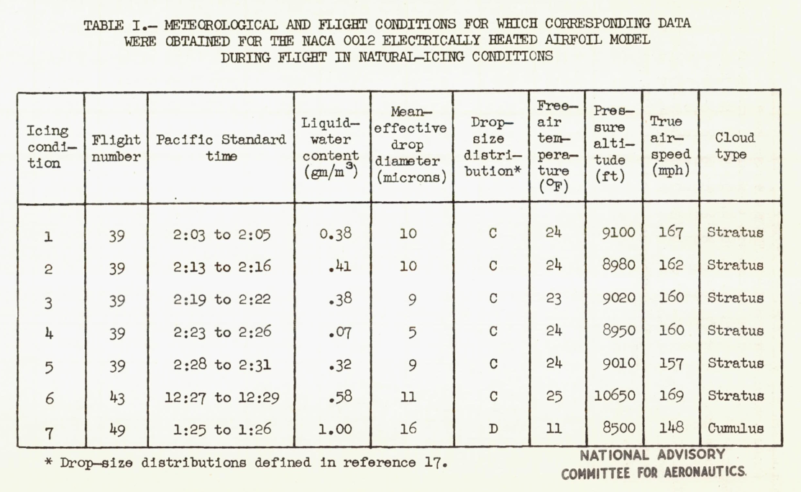
Runback water
The water that runs back on a surface is not usually a uniform sheet of water. The water tends to breakup into rivulets. This was characterized:
A picture of the conditions of wetness which existed on the airfoil during flight in clouds can be seen in figure 15. This figure shows some typical records obtained with strips of blueprint paper which had been fastened to a device that could be extended into the air stream up the leading edge of the airfoil model to a point just below the test section. Since, in effect, these were wrapped around the leading edge of the model, they illustrate the pattern that the water assumes in striking the airfoil and flowing aft. The records were obtained during icing conditions 11, 13, and 14, table II. 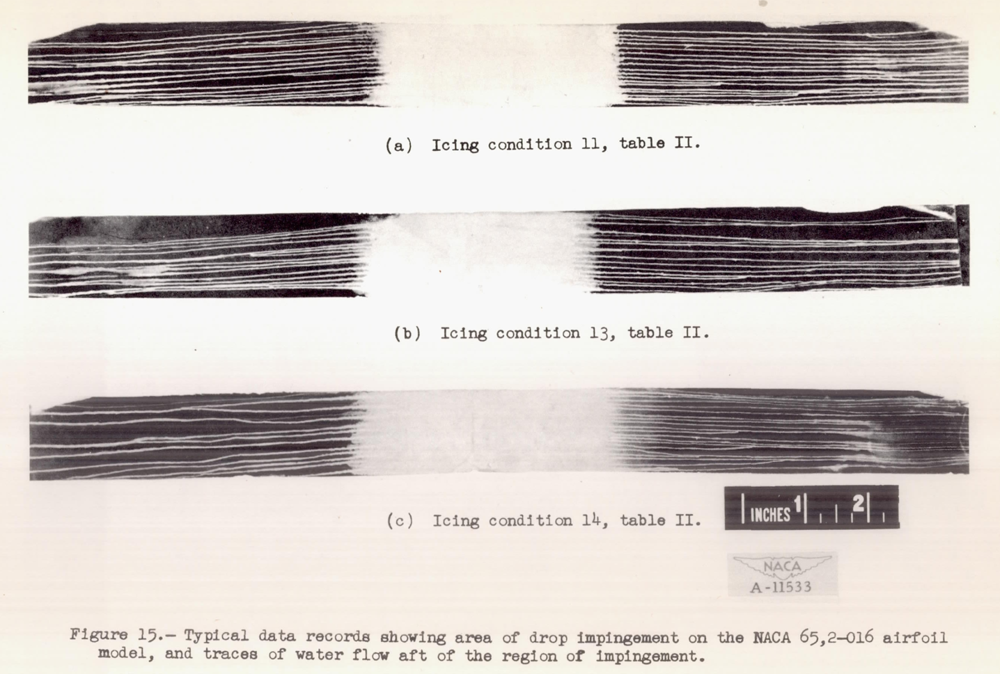
This was (roughly) correlated with water runback rate (although a constant value of about 0.25 would fit the data as well, IMHO).
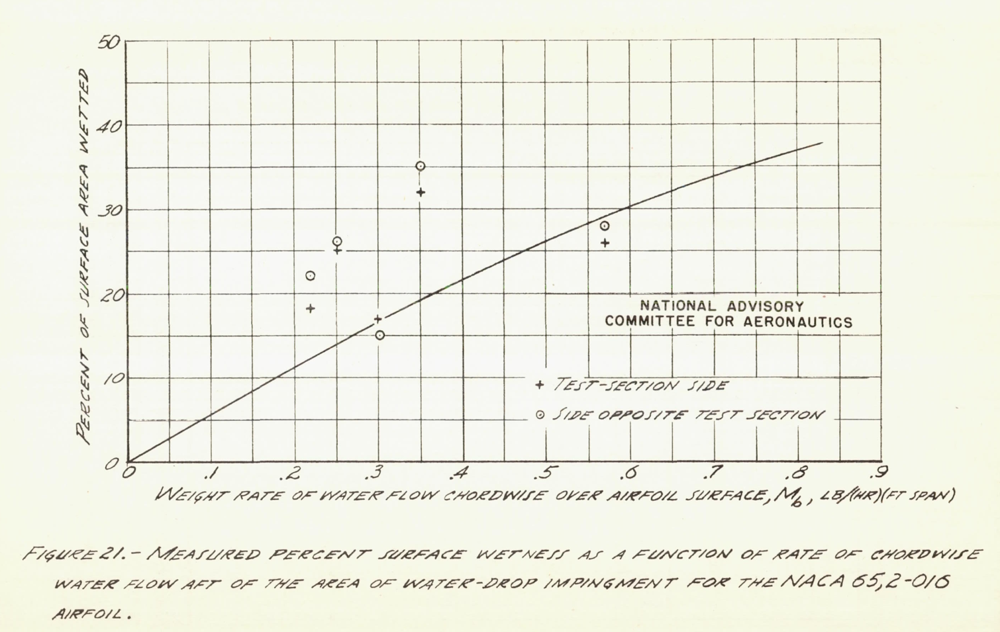
Analysis results
For brevity, we will examine the NACA 0012 test article results (only).
With measured flight test values for t_surface and heat applied to the heating strips, equations 24 and 25 were used to infer an external heat transfer coefficient, shown in Figure 8 ("H").
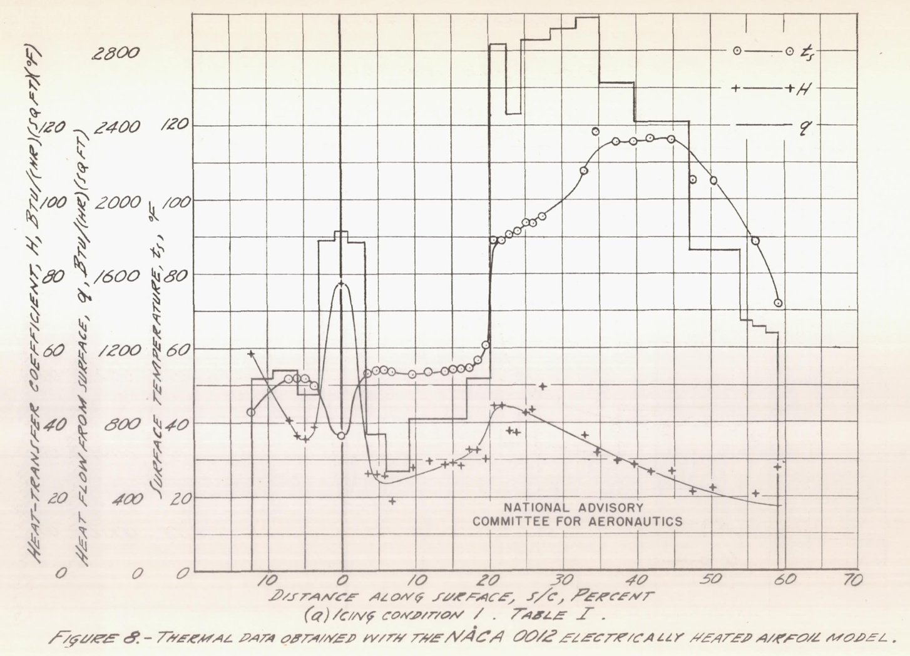
A python implementation (file "naca_tn_1472.py" 5) found similar values.
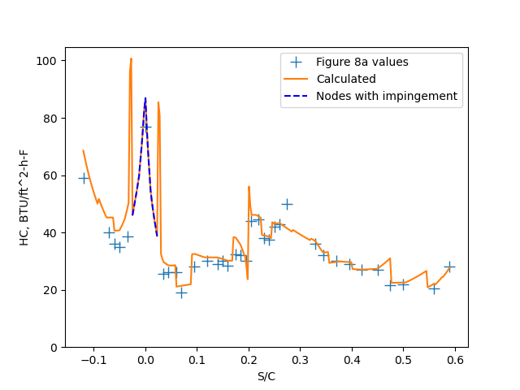
The analysis can be used to determine surface temperatures from the heating and heat transfer coefficients (rather than determining heat transfer coefficients for the surface temperatures and heating, as above). A set of heat transfer coefficients was used: 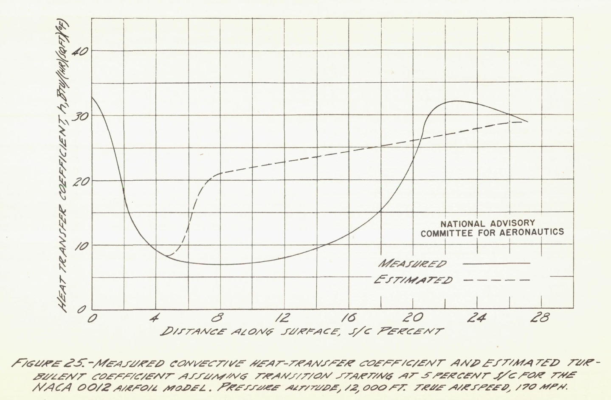
NACA-TN-1472 did not show the surface temperatures, here are the python analysis results. 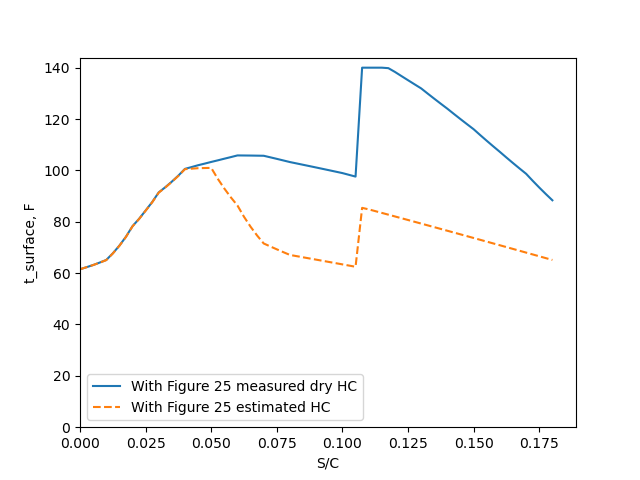
The portions of the heat transfer can be calculated: 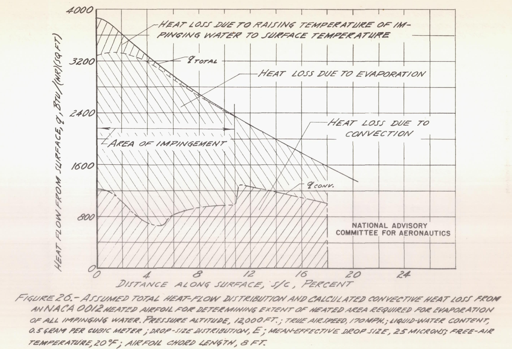
The python analysis shows similar results: 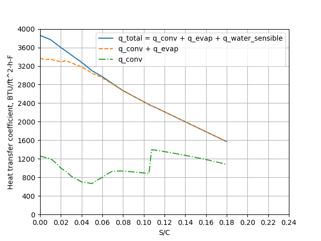
Heat transfer coefficients
For the same airfoil flying at similar conditions, we saw several measurements and estimates of the external heat transfer coefficients.
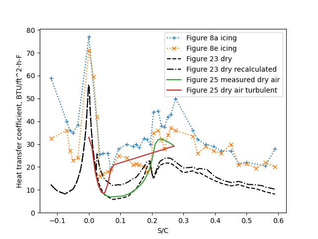
The values calculated in icing conditions ware uniformly higher than those in dry air conditions. NACA-TN-1472 offers an explanation of surface roughness about the transition region:
It is very likely that disturbance of the boundary layer, caused by water drops striking the airfoil surface and roughening the surface as they coalesce and flow aft, would effect a forward movement of transition. There is further evidence to support the assumption that the water-roughened surface caused movement of transition forward. Observations of the 65,2-016 airfoil during a flight in clear air with toe test section heated indicated that transition had shifted forward by a considerable amount. This was noted by a lowering of the surface temperature in the region aft of the leading edge. The heat distribution had been set previously to produce a constant surface temperature in clear air, and only a change in the boundary-layer characteristics could cause the evident change in heat-transfer coefficient. After the flight, a close examination of the leading-edge region of the airfoil revealed small insects stuck to the surface where they had hit during the flight. The surface was wiped clean and during a subsequent flight in clear air it was noted that transition had moved back again, as evidenced by the restoration of the surface temperatures to normal. Thus, it appears that very small irregularities in the surface, such as are present on the surface of an airfoil in icing conditions, are sufficient to cause transition to occur prematurely. Tests in wind tunnels also have shown that small protuberances in the leading-edge region of an airfoil will cause the movement of transition forward. (See reference 24.)
The exact values of the convective heat-transfer coefficient in the region aft of the area of impingement in icing conditions are unknown, but it 1s believed the values fluctuate due to changes in the location of transition during flight. Very probably, the disturbance to the boundary layer caused by water on the airfoil surface is of such a character as to create instability in the boundary layer, and cause the location of transition to fluctuate.
I do not find this explanation of differences in the aft region to be very convincing, as the differences extend more than "a short distance":
Most of the curves of heat-transfer coefficient measured during flight in icing conditions, shown in figures 8(a) to 8(f) and 12(a) to 12(g), display a definite increase in the aft region of high heat intensity, suggesting that transition is located at this point. It should be noted that the increase in heat-transfer coefficient indicated by these curves is believed to be only an apparent increase, caused by the rapid change in heating intensity in this region. If the coefficient is relatively constant throughout this area, as it is believed to be, a sudden increase in heating intensity will not be accompanied by an equally rapid change in the thermal boundary layer, and for a short distance aft the indicated values of heat-transfer coefficient will be erroneously high.
Despite the statement below that "In this [aft] region, the measured heat-flow curve and the calculated curve of convective heat transfer come together", the values do not correspond well:
In the aft region of high heat flow (figs. 23 and 24), the values of convective heat-transfer coefficient are known, since turbulent flow existed in this region in clear air, when the values were measured, as well as in icing conditions. In this region, the measured heat-flow curve and the calculated curve of convective heat transfer come together, indicating that at the point where the curves · coincide all the water on the surface has been evaporated.
The difference near S/C=0 are not explained.
Determining the heat transfer coefficients was a challenge in the NACA era, and is still a challenge in the current era. A heat transfer textbook 6 advises:
The foregoing correlations are suitable for most engineering calculations. However, they should not be viewed as providing exact determinations of the coefficients. Conditions may vary according to the freestream turbulence and surface roughness, and it would be unreasonable to expect the correlations to predict results to better than 25% accuracy. This statement made be made for virtually all the correlations to be considered.
I would extend the statement above to include modern, 3D CFD (computational fluid dynamics) tools, which can report computed results to great precision, but often unknown accuracy for heat transfer coefficients. Some CFD tools do not include surface roughness, and so would be limited for the surface water induced roughness cases noted above.
The heat transfer coefficients affect the heating required to evaporate all water, and so the use of coefficients that include the turbulent transition are recommended for system design:
The total heat flow required [in Figure 27] to evaporate all the water within the area from 0 to 14 percent s/c with transition at 5 percent s/c is approximately 10 percent greater than the amount of heat required if laminar flow prevails. Apparently, the location of transition moves forward in conditions of icing, even in the presence of a favorable pressure gradient, to a point where a strong favorable pressure gradient is encountered (figs. 11 and 16). As was stated previously, the location of transition is believed to fluctuate, probably over a considerable distance. It is suggested that forward movement of transition to a point close to the leading edge of the wing be assumed in the design of thermal ice-prevention equipment, especially in view of the fact that a greater amount of heat is required for the turbulent-flow condition.
Conclusions
From the foregoing discussion, it is concluded that the extent of knowledge on the meteorology of icing, the impingement of water drops on airfoil surfaces, and the processes of heat transfer and evaporation from a wetted airfoil surface has been increased to a point where the design of heated wings on a fundamental, wet-air basis now can be undertaken with reasonable certainty. In addition to this general conclusion, the following conclusions are drawn, based on test data and analytical studies of the processes of heat transfer and evaporation from a heated wing. 1. The heat should be concentrated as much as possible in the leading-edge region of the wing in the area of water-drop impingement, if an efficient thermal system is to be obtained. 2. An increase in altitude, for the same rate and area of water impingement on a wing and for the same conditions of true airspeed and free-air temperature, decreases the heat requirement for thermal ice prevention. 3. A wing thermal ice-prevention system which has been designed to evaporate all impinging water in the leading-edge region for a relatively high free-air temperature (20F) will be capable of ice prevention at low air temperatures (0F) in icing conditions nearly as severe as those upon which the design was based.
Citations
NACA-TN-1472 cites 26 publications:
- Rodert, Lewis A., Clousing, Lawrence A., and McAvoy, William H.: Recent Flight Research on Ice Prevention. NACA-ARR, Jan. 1942.
- Neel, Carr B., Jr., and Jones, Alun R.: Flight Tests of Thermal Ice-Prevention Equipment in the XB-24F Airplane. NACA-WR-A-7, Oct. 1943.
- Look, Bonne C.: Flight Tests of the Thermal Ice-Prevention Equipment on the B-17F Airplane. NACA-ARR-4B02, 1944.
- Selna, James, Neel, Carr B., Jr., and Zeiller, E. Lewis: An Investigation of a Thermal Ice-Prevention System for a C-46 Cargo Airplane, IV - Results of Flight Tests in Dry-Air and Natural-Icing Conditions. NACA-ARR-5A03c, 1945.
- Hardy, J. K.: Protection of Aircraft Against Ice. Rep. No. S.M.E. 3380, British R.A.E., July 1946.
- Hardy, J. K.: An Analysis of the Dissipation of Heat in Conditions of Icing from a Section of the Wing of the C-46 Airplane. NACA-TR-831, 1945. (Formerly NACA-ARR-4I11a.)
- Hardy, J. K.: Measurement of Free Water in Cloud Under Conditions of Icing. NACA-ARR-4I11, 1944.
- Lewis, William: Icing Properties of Noncyclonic Winter Stratus Clouds. NACA-TN-1391, 1947.
- Lewis, William: Icing Zones in a Warm Front System with General Precipitation. NACA-TN-1392, 1947.
- Bowers, R. D., ed.: Icing Report by the University of California, Fiscal Year 1946. AAF Tech. Rep. 5529, Section VI, Nov. 6, 1946. (Issued as Boelter's Rep., Univ. of Calif., Dept. of Eng., Aug. 1, 1946.)
- Bowers, R. D., ed.: Basic Icing Research by General Electric Company, Fiscal Year 1946. AAF Tech. Rep. 5539, Sec. 3, Jan. 1947.
- Tribus, Myron, and Tessman, J. R.: Report on the Development and Application of Heated Wings. AAF TR 4972, Add. I, Jan. 1946. (Available from Office of Technical Services, U. S. Department of Commerce as PB No. 18122.)
- Lewis, William: A Flight Investigation of the Meteorological Conditions Conducive to the Formation of Ice on Airplanes. NACA-TN-1393, 1947.
- Lewis, William, Kline, Dwight B., and Steinmetz, Charles P.: A Further Investigation of the Meteorological Conditions Conducive to Aircraft Icing. NACA-TN-1424, 1947.
- Bergrun, Norman R.: A Method for Numerically Calculating the Area and Distribution of Water Impingement on the Leading Edge of an Airfoil in a Cloud. NACA-TN-1397, 1947.
- Glauert, Muriel: A Method of Constructing the Paths of Raindrops of Different Diameters Moving in the Neighbourhood of (1) a Circular Cylinder, (2) an Aerofoil, Placed in a Uniform Stream of Air; and a Determination of the Rate of Deposit of the Drops on the Surface and the Percentage of Drops Caught. R. & M. No. 2025, British A.R.C., 1940.
- Langmuir, Irving, and Blodgett, Katherine B.: A Mathematical Investigation of Water Droplet Trajectories. Tech. Rep. No. 5418, Air Materiel Command, AAF, Feb. 19, 1946. (Contract No. W-33-038-ac-9151 with General Electric Co.)
- Frick, Charles W., Jr., and McCullough, George B.: A Method for Determining the Rate of Heat Transfer from a Wing or Streamline Body. NACA-WR-A-40, Dec. 1942.
- Boelter, L. M. K., Grossman, L. M., Martinelli, R. C., and Morrin, E. H.: An Investigation of Aircraft Heaters, Part XIX - Comparison of Several Methods of Calculating Heat Losses from Airfoils. NACA-TN-1453, University of California, 1947.
- Jones, Alun R., and Spies, Ray J., Jr.: An Investigation of a Thermal Ice-Prevention System for a C-46 Cargo Airplane, III - Description of Thermal Ice-Prevention Equipment for Wings, Empennage, and Windshield. NACA-ARR-5A03b, 1945.
- Jones, Alun R., Holdaway, George H., and Steinmetz, Charles P.: A Method for Calculating the Heat Required for Windshield Thermal Ice Prevention Based on Extensive Flight Tests in Natural—Icing Conditions. NACA-TN-1434, 1947.
- Jacobs, Eastman N., Ward, Kenneth P., and Pinkerton, Robert M.: The Characteristics of 78 Related Airfoil Sections from Tests in the Variable—Density Wind Tunnel. NACA-TR-460, 1933.
- Frick, Charles W., Jr., and McCullough, George B.: Tests of a Heated Low—Drag Airfoil. NACA-ACR-244, Dec. 1942.
- Abbott, Ira H., von Doenhoff, Albert E., and Stivers, Louis S., Jr.: Summary of Airfoil Data. NACA-TR-824, Mar. 1945.
- Gardner, Tracy B.: Investigation of Runback. Air Materiel Command Ice Research Base Rep. No. IRB 46-36-1F, July 1946.
- Neel, Carr B., Jr.: An Investigation of a Thermal Ice-Prevention System for a C-46 Cargo Airplane, I— Analysis of the Thermal Design for Wings, Empennage, and Windshield. NACA-ARR-A503, 1945.
NACA-TN-1472 is cited by 11 publications in the NACA Icing Publications Database 7:
- Jones, Alun R., and Lewis, William: Recommended Values of Meteorological Factors to be Considered in the Design of Aircraft Ice-Prevention Equipment. NACA-TN-1855, 1949.
- Bergrun, Norman R.: An Empirical Method Permitting Rapid Determination of the Area, Rate, and Distribution of Water-Drop Impingement on an Airfoil of Arbitrary Section at Subsonic Speeds. NACA-TN-2476, 1951.
- Gelder, Thomas F., and Lewis, James P.: Comparison of Heat Transfer from Airfoil in Natural and Simulated Icing Conditions. NACA-TN-2480, 1951.
- von Glahn, Uwe H., Callaghan, Edmund E., and Gray, Vernon H.: NACA Investigations of Icing-Protection Systems for Turbojet-Engine Installations. NACA-RM-E51B12, 1951.
- Bergrun, Norman R.: An Empirically Derived Basis for Calculating the Area, Rate, and Distribution of Water-Drop Impingement on Airfoils. NACA-TR-1107, 1952.
- Gray, Vernon H.: Simple Graphical Solution of Heat Transfer and Evaporation from Surface Heated to Prevent Icing. NACA-TN-2799, 1952.
- Gray, Vernon H., Bowden, Dean T., and von Glahn, Uwe H.: Preliminary Results of Cyclical De-icing of a Gas-Heated Airfoil. NACA-RM-E51J29, 1952
- Lewis, James P., and Bowden, Dean T.: Preliminary Investigation of Cyclic De-Icing of an Airfoil Using an External Electric Heater. NACA-RM-E51J30, 1952.
- Lewis, William, Perkins, Porter J., and Brun, Rinaldo J.: Procedure for Measuring Liquid-Water Content and Droplet Sizes in Super-cooled Clouds by Rotating Multicylinder Method. NACA-RM-E53D23, 1953.
- Brun, Rinaldo J., Lewis, William, Perkins, Porter J., and Serafini, John S.: Impingement of Cloud Droplets and Procedure for Measuring Liquid-Water Content and Droplet Sizes in Supercooled Clouds by Rotating Multicylinder Method. NACA-TR-1215, 1955. (Supersedes NACA TN’s 2903, 2904, and NACA-RM-E53D23)
- von Glahn, Uwe H., and Blatz, Robert E.: Investigation of Power Requirements for Ice Prevention and Cyclical De-Icing of Inlet Guide Vanes with Internal Electric Heaters. NACA-RM-E50H29, Dec. 1950.
NACA-TN-1472 is cited 33 times in the literature 8.
Notes:
-
Neel, Carr B., Jr., Bergrun, Norman R., Jukoff, David, and Schlaff, Bernard A.: The Calculation of the Heat Required for Wing Thermal Ice Prevention in Specified Icing Conditions. NACA-TN-1472, 1947 ntrs.nasa.gov. ↩
-
Bergrun, Norman R.: A Method for Numerically Calculating the Area and Distribution of Water Impingement on the Leading Edge of an Airfoil in a Cloud. NACA-TN-1397, 1947. ↩
-
Glauert, Muriel: A Method of Constructing the Paths of Raindrops of Different Diameters Moving in the Neighbourhood of (1) a Circular Cylinder, (2) an Aerofoil, Placed in a Uniform Stream of Air; and a Determination of the Rate of Deposit of the Drops on the Surface and the Percentage of Drops Caught. R. & M. No. 2025, British A.R.C., 1940. ↩
-
Langmuir, Irving, and Blodgett, Katherine B.: A Mathematical Investigation of Water Droplet Trajectories. Tech. Rep. No. 5418, Air Materiel Command, AAF, Feb. 19, 1946. (Contract No. W-33-038-ac-9151 with General Electric Co.) ↩
-
Incropera, F. P., De Witt, D. P.: "Fundamentals of Heat Transfer", John Wiley and Sons, 1984. ↩